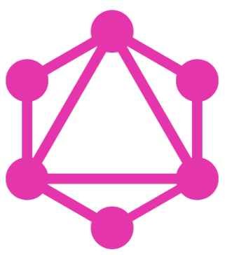
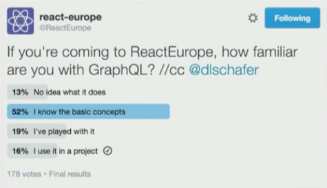
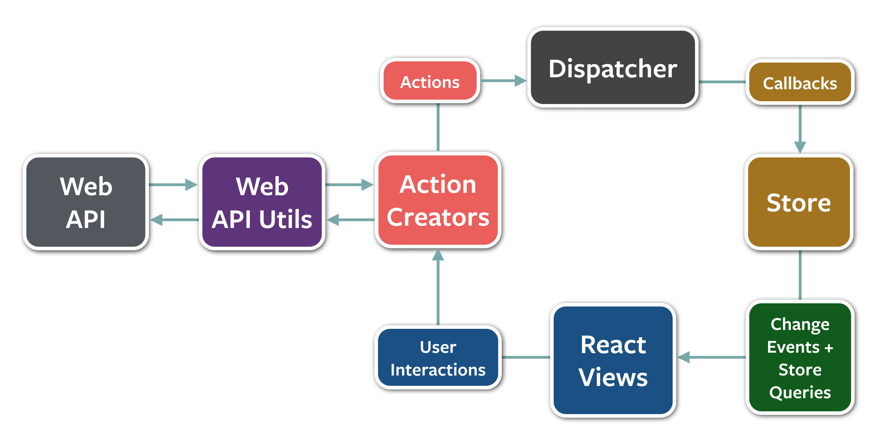

<!doctype html>
<html lang="en">

    <head>
        <meta charset="utf-8">

        <title>GraphQL with Angular2</title>

        <meta name="apple-mobile-web-app-capable" content="yes">
        <meta name="apple-mobile-web-app-status-bar-style" content="black-translucent">

        <meta name="viewport" content="width=device-width, initial-scale=1.0, maximum-scale=1.0, user-scalable=no, minimal-ui">

        <link rel="stylesheet" href="bower_components/reveal.js/css/reveal.css">

        <link rel="stylesheet" href="css/theme.css" id="theme">


        <!-- For syntax highlighting -->
        <link rel="stylesheet" href="bower_components/highlightjs/styles/zenburn.css">

        <link rel="stylesheet" href="resources/fonts/liberationsans_regular_macroman/stylesheet.css">

        <link rel="stylesheet" href="https://use.fontawesome.com/48216ef867.css">

        <!-- Printing and PDF exports -->
        <script>
            var link = document.createElement( 'link' );
            link.rel = 'stylesheet';
            link.type = 'text/css';
            link.href = window.location.search.match( /print-pdf/gi ) ? 'bower_components/reveal.js/css/print/pdf.css' : 'bower_components/reveal.js/css/print/paper.css';
            document.getElementsByTagName( 'head' )[0].appendChild( link );
        </script>

        <!--[if lt IE 9]>
        <script src="bower_components/reveal.js/lib/js/html5shiv.js"></script>
        <![endif]-->
    </head>

    <body>

        <div class="reveal">

            <div class="slides">

                
                    
                        
    <section data-markdown="" data-separator="^
?
---
?
"><script type="template/markdown">
# GraphQL with Angular2

by @Quramy

<span>2016.06.10 #fr_wa_lt</span>
</script></section>


                    
                    
                
                    
                        
    <section data-markdown="" data-separator="^
?
---
?
"><script type="template/markdown">## About me

倉見 洋輔 @Quramy
<a href="https://twitter.com/quramy" style="color:inherit;font-size:larger" target="_blank"><span class="fa fa-twitter-square"></span> </a>
<a href="https://github.com/Quramy" style="color:inherit;font-size:larger" target="_blank"><span class="fa fa-github-square"></span></a>


<p class="smaller">
株式会社WACUL所属のフロントエンジニア
</p>
<p class="smaller">
</script></section>


                    
                    
                
                    
                        
    <section data-markdown="" data-separator="^
?
---
?
"><script type="template/markdown">## GraphQL



---

### What's GraphQL ?

<ul class="good">
  <li>Demand Driven Architecture</li>
  <li>Hierarchical Composition</li>
  <li>Solid schema system</li>
</ul>

---

リモートデータから欲しい部分だけ取得できる仕組み

---

### Query example

<iframe src="https://www.graphqlhub.com/playground?query=%7B%0A%20%20graphQLHub%0A%20%20github%20%7B%0A%20%20%20%20repo(name%3A%20%22typed-css-modules%22%2C%20ownerUsername%3A%20%22quramy%22)%20%7B%0A%20%20%20%20%20%20name%0A%20%20%20%20%20%20owner%20%7B%0A%20%20%20%20%20%20%20%20login%0A%20%20%20%20%20%20%20%20company%0A%20%20%20%20%20%20%7D%0A%20%20%20%20%20%20issues(limit%3A%201)%20%7B%0A%20%20%20%20%20%20%20%20comments%20%7B%0A%20%20%20%20%20%20%20%20%20%20body%0A%20%20%20%20%20%20%20%20%7D%0A%20%20%20%20%20%20%7D%0A%20%20%20%20%7D%0A%20%20%7D%0A%7D%0A" frameborder="0" style="width:80%;height:350px"></iframe>

---

<p class="smaller">
  React Europe 2016の参加者の16% が本番利用している
</p>



<p class="link smaller"><a href="https://youtu.be/etax3aEe2dA?t=37://youtu.be/etax3aEe2dA?t=37s" target="_blank">
<span class="fa fa-youtube-play"></span> Dan Schafer - GraphQL at Facebook at react-europe 2016</a></p>

---

...GraphQLとWebAppをどうやって繋げたら良いのか？

---

## Relay


---

GraphQLとReactをいい感じに統合するフレームワーク

---

<div style="display:flex">
  <div>
    <p>Flux</p>
    
    <ul class="bad" style="font-size: smaller">
    <li>
      非同期の部分が複雑...
    </li>
    </ul>
  </div>
  <p style="width:40px"></p>
  <div>
    <p>Relay</p>
    
    <ul class="good" style="font-size: smaller">
    <li>
      データ管理はRelayに丸投げ！
    </li>
    </ul>
  </div>
</div>

---

<p class="smaller">
  GraphQLのfragment
<span class="fa fa-arrow-right"></span>
  React.Componentのprops
</p>


```js
function UserComponent({user}) {
  return (
    <div>
      <span>{user.name}</span>
      
    </div>
  );
}

export const User = Relay.createContainer(UserComponent, {
  fragments: {
    user: () => Relay.QL`
      fragment on User {
        name, profileUrl
      }
    `,
  }
});
```

---

いや、でも俺、Angularの方が慣れてるんだけど...

---

<span class="fa fa-lightbulb-o" style="font-size: 120px"></span>

~~React~~ Angular Component にすればいいだけじゃね？

---

### Relay Core API

RelayからReact依存をひっぺがす取り組み

<a href="https://github.com/facebook/relay/issues/559" target="_blank">issues/559</a>で議論されている

<a href="https://github.com/andimarek/generic-relay" target="_blank">andimarek/generic-relay</a> に何かそれっぽい奴がいる


---

### やってみた

---

#### Reindex + GraphQL + Relay + Angular2


---

### Demonstration

<iframe class="demo" src="resources/demo/ng2-relay/" frameborder="0" style="height: 480px"></iframe>

---

RelayContainerになるやつにGraphQL書く

```js
import * as Relay from 'generic-relay';

export const UserContainer = Relay.createGenericContainer('UserContainer', {
  fragments: {
    user: () => Relay.QL`
      fragment user on User {
        id, name, profileUrl
      }
    `
  }
});
```

---

自作DecoratorでComponentにRelayContainer結合する

```js
import { Component , Input } from "@angular/core";
import { NgZone } from "@angular/core";
import { ConnectRelay } from "../connectRelay";

@ConnectRelay({ container: UserContainer }) // Relayとつなぐオレオレデコレータ
@Component({
  selector: 'user',
  template: `
  <div>
    <div class="user" ng-if="user">
      
      <p class="avatar" *ngIf="!user.profileUrl"><span class="fa fa-user"></span></p>
      <h3>{{user?.name}}</h3>
    </div>
  </div>
  `,
})
export class UserComponent {
  // ここにGraphQLのQuery Dataが注入される
  private user: { name: string; profileUrl: string };
  constructor(private ngZone: NgZone) { }
}
```
<p class="smaller">
参考:
  <a class="link" href="https://tech.small-improvements.com/2016/02/25/angular-2-and-relay/" target="_blank">tech.small-improvements.com/2016/02/25/angular-2-and-relay/</a>
</p>

---

### 実現できることはreact-relayと一緒

<ul class="good">
  <li>Fragmentを使ったcolocation
  <p class="smaller">Viewが必要とするデータをComponentで宣言できる</p>
  </li>
  <li>Client Storeデータの管理
  <p class="smaller">Mutation発行 -> Cache(Store)のデータ管理をRelayに任せることができる</p>
  </li>
</ul>

---

### イケてないとこ

<ul>
<li>
<p class="smaller">
  generic-relayは結構古い(最終commitが今年1月)ので, 本家とRelayのAPIが少し違う
</p>
</li>
<li>
<p class="smaller">
  `Relay.QL`はbabel-relay-pluginで事前にcompileする必要がある. <br/> TypeScriptを使う場合は多段transpile必須
</p>
</li>
<li>
<p class="smaller">
  そもそもTypeScriptでのComponent型宣言とFragmentの記述が冗長
</p>
</li>
<li>
<p class="smaller">
Decoratorからng2のDI空間にアクセスする方法がない<br />別の方法で考えた方が良さげ(妙案募集中)
</p>
</li>
</ul>

---

# Summary

---

### 結論

 * Flux/Redux で疲弊している人は挑戦する価値があるかも.
 * Relayを使ったSPAのパターンはReact/Angularとあまり関係ない
 * Relay Coreがlaunchされるまでは、React + Relayで慣れておくのが無難

---

# Thank you!

by @Quramy

---

## Appendix

GraphQL, Relayを勉強するのに役立ったリソース, ツール達

---

### 1/2

<ul class="good">
  <li>
    <a href="https://learngraphql.com/" target="_blank">Learn GraphQL</a>
    <p class="smaller">対話的にGraphQLを触りながら学べるworkshop</p>
  </li>
  <li>
    <a href="https://github.com/skevy/graphiql-app" target="_blank">graphiql-app</a>
    <p class="smaller">GraphiQL(GraphQLの対話ツール)のElectronラッパー. <br>複数クエリの保存編集が出来るため, サーバー作成中に便利</p>
  </li>
  <li>
    <a href="https://www.graphqlhub.com/" target="_blank">GraphQL Hub</a>
    <p class="smaller">GithubやGiphyなど、有名なWebサービスをGraphQLでラップしたエンドポイントが公開されている. サーバを立てずにGraphQLが触れるが、Relayには対応していない</p>
  </li>
</ul>

---

### 2/2

<ul class="good">
  <li>
    <a href="https://chrome.google.com/webstore/detail/graphql-network/igbmhmnkobkjalekgiehijefpkdemocm?hl=en-GB" target="_blank">GraphQL Network</a>
    <p class="smaller">GraphQLの通信内容を表示してくるChrome Extension. <br> GraphQLを使ったアプリ開発時に便利</p>
  </li>
  <li>
    <a href="https://facebook.github.io/relay/docs/graphql-relay-specification.html#content" target="_blank">GraphQL Relay Specification</a>
    <p class="smaller">本家のGuide. RelayでGraphQLを使う際の約束事が書かれている. </p>
  </li>
  <li>
    <a href="https://www.reindex.io/" target="_blank">Reindex</a>
    <p class="smaller">Relayにも対応しているGraphQLのBaaS. <br />Relayを一通り勉強した後に触った方が良いかも</p>
  </li>
</ul>
</script></section>


                    
                    
                
            </div>

        </div>

        <script src="bower_components/reveal.js/lib/js/head.min.js"></script>
        <script src="bower_components/reveal.js/js/reveal.js"></script>
        <script>

          // Full list of configuration options available at:
          // https://github.com/hakimel/reveal.js#configuration
          Reveal.initialize({
            controls: true,
            progress: true,
            history: true,
            center: true,

            transition: 'slide', // none/fade/slide/convex/concave/zoom

            // Optional reveal.js plugins
            dependencies: [
              { src: 'bower_components/reveal.js/lib/js/classList.js', condition: function() { return !document.body.classList; } },
              { src: 'bower_components/reveal.js/plugin/markdown/marked.js', condition: function() { return !!document.querySelector( '[data-markdown]' ); } },
              { src: 'bower_components/reveal.js/plugin/markdown/markdown.js', condition: function() { return !!document.querySelector( '[data-markdown]' ); } },
              { src: 'bower_components/reveal.js/plugin/highlight/highlight.js', async: true, condition: function() { return !!document.querySelector( '[data-html]' ) || !!document.querySelector( 'pre code' ) || !!document.querySelector( '[data-markdown]' ); }, callback: function() { hljs.initHighlightingOnLoad(); } },
              { src: 'bower_components/reveal.js/plugin/zoom-js/zoom.js', async: true },
              { src: 'bower_components/reveal.js/plugin/notes/notes.js', async: true },
              { src: 'js/loadhtmlslides.js', condition: function() { return !!document.querySelector( '[data-html]' ); } }
            ]
          });

        </script>
    </body>

</html>
